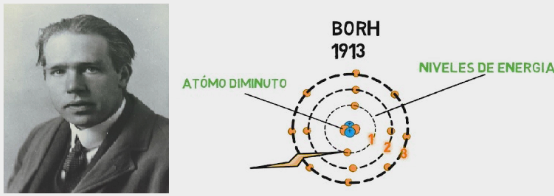

El átomo es la parte más pequeña de la materia que tiene propiedades de un elemento químico. Cada sólido, líquido, gas y plasma se compone de átomos neutros o ionizados. Los átomos son microscópicos; los tamaños típicos son alrededor de 100 pm (diez mil millonésima parte de un metro). No obstante, los átomos no tienen límites bien definidos y hay diferentes formas de definir su tamaño que dan valores diferentes pero cercanos. Los átomos son lo suficientemente pequeños para que la física clásica dé resultados notablemente incorrectos. A través del desarrollo de la física, los modelos atómicos han incorporado principios cuánticos para explicar y predecir mejor su comportamiento. El término proviene del latín atŏmus, calco del griego ἄτομον (átomon) ἄτομος, unión de (a, que significa «sin»), y τόμος (tómos, «sección»), que literalmente es «que no se puede cortar, indivisible»,y fue el nombre que se dice les dio Demócrito de Abdera, discípulo de Leucipo de Mileto, a las partículas que él concebía como las de menor tamaño posible.
Fue el primer modelo atómico con bases científicas comprobables, fue formulado en 1803 por John Dalton, quien imaginaba a los átomos como diminutas esferas. Este primer modelo atómico postulaba:
Los átomos de un mismo elemento son iguales entre sí, tienen su propio peso y cualidades propias. Los átomos de los diferentes elementos tienen pesos diferentes.
Los átomos permanecen sin división, aun cuando se combinen en las reacciones químicas.
Los átomos, al combinarse para formar compuestos guardan relaciones simples.
Los átomos de elementos diferentes se pueden combinar en proporciones distintas y formar más de un compuesto
Los compuestos químicos se forman al unirse átomos de dos o más elementos distintos.
Modelo de Thomson
Luego del descubrimiento del electrón en 1897 por Joseph John Thomson, se determinó que la materia se componía de dos partes, una negativa y una positiva. La parte negativa estaba constituida por electrones, los cuales se encontraban, según este modelo, inmersos en una masa de carga positiva a manera de pasas en un pastel (de la analogía del inglés plum-pudding model) o uvas en gelatina.
Modelo de Rutherford
Este modelo fue desarrollado por el físico Ernest Rutherford a partir de los resultados obtenidos en lo que hoy se conoce como el experimento de Rutherford en 1911. Representa un avance sobre el modelo de Thomson, ya que mantiene que el átomo se compone de una parte positiva y una negativa. Sin embargo, a diferencia del anterior, postula que la parte positiva se concentra en un núcleo, el cual también contiene virtualmente toda la masa del átomo, mientras que los electrones se ubican en una corteza orbitando al núcleo en órbitas circulares o elípticas con un espacio vacío entre ellos. A pesar de ser un modelo obsoleto, es la percepción más común del átomo del público no científico.
Modelo de Borh
Este modelo es estrictamente un modelo del átomo de hidrógeno tomando como punto de partida el modelo de Rutherford. Niels Bohr trata de incorporar los fenómenos de absorción y emisión de los gases, así como la nueva teoría de la cuantización de la energía desarrollada por Max Planck y el fenómeno del efecto fotoeléctrico observado por Albert Einstein.«El átomo es un pequeño sistema solar con un núcleo en el centro y electrones moviéndose alrededor del núcleo en órbitas bien definidas». Las órbitas están cuantizadas (los electrones pueden estar solo en ciertas órbitas)

Modelo de Chadwick
El modelo propuesto por James Chadwick se centra en la modelación del núcleo atómico constituido no solo por protones (cargas positivas), sino también por neutrones (cargas neutras). A partir de su descubrimiento del neutrón, en 1932 (por el que recibió el Premio Nobel en 1935), Chadwick concibió que el modelo inicialmente considerado que el neutrón era un arreglo constituido por un protón y un electrón, lo cual generaba la carga neutra
Estrustura del Átomo
Prticulas Subatomicas
El átomo contiene protones, neutrones y electrones, con la excepción del átomo de hidrógeno-1, que no contiene neutrones, y del catión hidrógeno o hidrón, que no contiene electrones. Los protones y neutrones del átomo se denominan nucleones, por formar parte del núcleo atómico.
El Electron: El electrón es la partícula más ligera de las que componen el átomo, con una masa de 9,11 por 10 a la menos 31 kg. Tiene una carga eléctrica negativa, cuya magnitud se define como la carga eléctrica elemental, y se ignora si posee subestructura, por lo que se considera una partícula elemental.
El Proton: Los protones tienen una masa de 1,672 por 10 a la menos 27 kg, 1836 veces la del electrón, y una carga positiva opuesta a la de este.
Los Neutrones: Los neutrones tienen una masa de 1,69 por 10 a la menos 27 kg, 1839 veces la del electrón, y no poseen carga eléctrica.
El Núcleo Átomico
Los protones y neutrones de un átomo se encuentran ligados en el núcleo atómico, en la parte central del mismo. El volumen del núcleo es aproximadamente proporcional al número total de nucleones, el número másico A, lo cual es mucho menor que el tamaño del átomo, cuyo radio es del orden de 105 fm o 1 ángstrom (Å). Los nucleones se mantienen unidos mediante la fuerza nuclear, que es mucho más intensa que la fuerza electromagnética a distancias cortas, lo cual permite vencer la repulsión eléctrica entre los protones.
Los átomos de un mismo elemento tienen el mismo número de protones, que se denomina número atómico y se representa por Z. Los átomos de un elemento dado pueden tener distinto número de neutrones: se dice entonces que son isótopos. Ambos números conjuntamente determinan el nucleido.
Nube de Electrones
Los electrones en el átomo son atraídos por los protones a través de la atracción electromagnética. Esta fuerza los atrapa en un pozo de potencial electrostático alrededor del núcleo, lo que hace necesaria una fuente de energía externa para liberarlos. Cuanto más cerca está un electrón del núcleo, mayor es la fuerza atractiva, y mayor por tanto la energía necesaria para que escape.
Los electrones, como otras partículas, presentan simultáneamente propiedades de partícula puntual y de onda, y tienden a formar un cierto tipo de onda estacionaria alrededor del núcleo, en reposo respecto de este. Cada una de estas ondas está caracterizada por un orbital atómico, una función matemática que describe la probabilidad de encontrar al electrón en cada punto del espacio. El conjunto de estos orbitales es discreto, es decir, puede enumerarse, como es propio en todo sistema cuántico. La nube de electrones es la región ocupada por estas ondas, visualizada como una densidad de carga negativa alrededor del núcleo
Cada orbital corresponde a un posible valor de energía para los electrones, que se reparten entre ellos. El principio de exclusión de Pauli prohíbe que más de dos electrones se encuentren en el mismo orbital. Pueden ocurrir transiciones entre los distintos niveles de energía: si un electrón absorbe un fotón con energía suficiente, puede saltar a un nivel superior; también desde un nivel más alto puede acabar en un nivel inferior, radiando el resto de la energía en un fotón. Las energías dadas por las diferencias entre los valores de estos niveles son las que se observan en las líneas espectrales del átomo.
Propiedades del Átomo
Masa: La mayor parte de la masa del átomo viene de los nucleones, los protones y neutrones del núcleo. También contribuyen en una pequeña parte la masa de los electrones, y la energía de ligadura de los nucleones, en virtud de la equivalencia entre masa y energía. La unidad de masa que se utiliza habitualmente para expresarla es la unidad de masa atómica (u).
Tamaño: Los átomos no están delimitados por una frontera clara, por lo que su tamaño se equipara con el de su nube electrónica. Sin embargo, tampoco puede establecerse una medida de esta, debido a las propiedades ondulatorias de los electrones. En la práctica, se define el radio atómico estimándolo en función de algún fenómeno físico, como la cantidad y densidad de átomos en un volumen dado, o la distancia entre dos núcleos en una molécula.
Niveles de Energia: En mecánica cuántica, un nivel energético es un estado (o conjunto de estados) cuya energía es uno de los valores posibles del operador hamiltoniano, y por lo tanto su valor de energía es un valor propio de dicho operador. Matemáticamente los estados de un cierto nivel energético son funciones propias del mismo hamiltoniano.